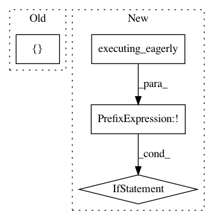

6c2b9a4cfac5f6b971b79566d4475e0e7d7ad82a,rllib/utils/schedules/schedule.py,Schedule,value,#Schedule#Any#,41
Before Change
def value(self, t):
if self.framework == "tf":
return tf.cast(
tf.py_function(self._value, [t], tf.float64),
tf.float32,
name="schedule_value")
return self._value(t)
After Change
Returns:
any: The calculated value depending on the schedule and `t`.
if self.framework == "tf" and not tf.executing_eagerly():
return self._tf_value_op(t)
return self._value(t)
def __call__(self, t):
Simply calls self.value(t). Implemented to make Schedules callable.
In pattern: SUPERPATTERN
Frequency: 3
Non-data size: 4
Instances
Project Name: ray-project/ray
Commit Name: 6c2b9a4cfac5f6b971b79566d4475e0e7d7ad82a
Time: 2020-05-04
Author: sven@anyscale.io
File Name: rllib/utils/schedules/schedule.py
Class Name: Schedule
Method Name: value
Project Name: keras-team/keras
Commit Name: 70d7d07bd186b929d81f7a8ceafff5d78d8bd701
Time: 2021-04-07
Author: scottzhu@google.com
File Name: keras/saving/saved_model/saved_model_test.py
Class Name: MetricTest
Method Name: test_custom_metric_model
Project Name: tensorflow/tensorflow
Commit Name: afd954e65f15aea4d438d0a219136fc4a63a573d
Time: 2021-05-04
Author: mattdangerw@google.com
File Name: tensorflow/python/keras/layers/preprocessing/normalization_test.py
Class Name: NormalizationTest
Method Name: test_broadcasting_during_direct_setting_with_tensors